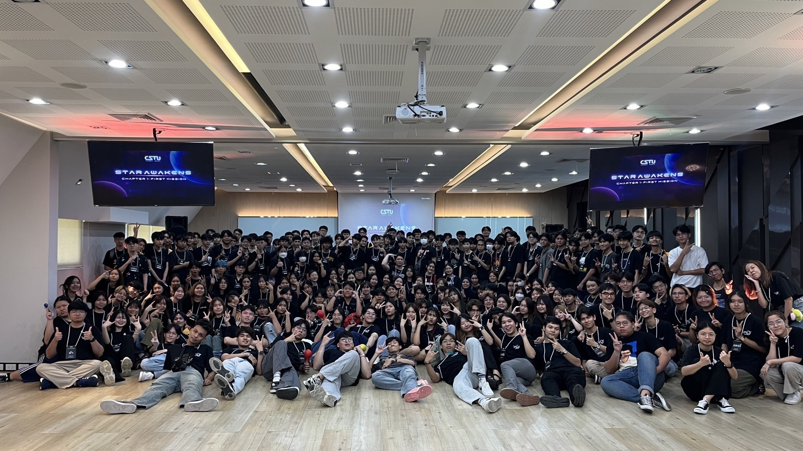

ตั้งแต่วันแรกที่ได้เข้ามาอยู่เป็นส่วนหนึ่งในบ้าน CSTU รุ่น39 ก็ยินดีเป็นอย่างมาก ก่อนอื่นก็คงจะต้องบอกตามความจริงว่าผมไม่ได้เป็นคนเขียนโค้ดหรืออะไรพวกนี้ ได้ถนัด เวลาเดียวที่ผมจะได้เขียนอะไรพวกนี้ก็คือเวลาที่ผมจะได้เรียนวิชาคอมพิวเตอร์ตอนอยู่ที่โรงเรียนมัธยมของผม พอได้เข้ามาอยู่บ้าน CSTU ก็เลยจะตื่นเต้น เป็นพิเศษเพราะมีอะไรพวกนี้ให้ทำในทุกสัปดาห์แถมมีห้องปฏิบัติการให้เข้าไปใช้งานด้วย การเดินทางของผมที่อยู่ในบ้าน CSTU ตลอด 4 ปี ผมก็คงจะตั้งใจเรียน ใช้ชีวิตในรั่วมหาลัยธรรมศาสตร์ให้มีความสุข แล้วก็ผมคงจะต้องหาความรู้เรื่องเทคโนโลยีตลอดเวลาเลยหล่ะ เพราะอย่างที่ทุกคนทราบกัน เทคโนโลยีเป็นอะไรที่ เปลี่ยนแปลงอยู่ตลอดเวลา ดังนั้นถ้าไม่อยากให้เทคโนโลยีเป็นนายของเรา เราก็ควรนำหน้าเทคโนโลยีหนึ่งก้าวเสมอ
